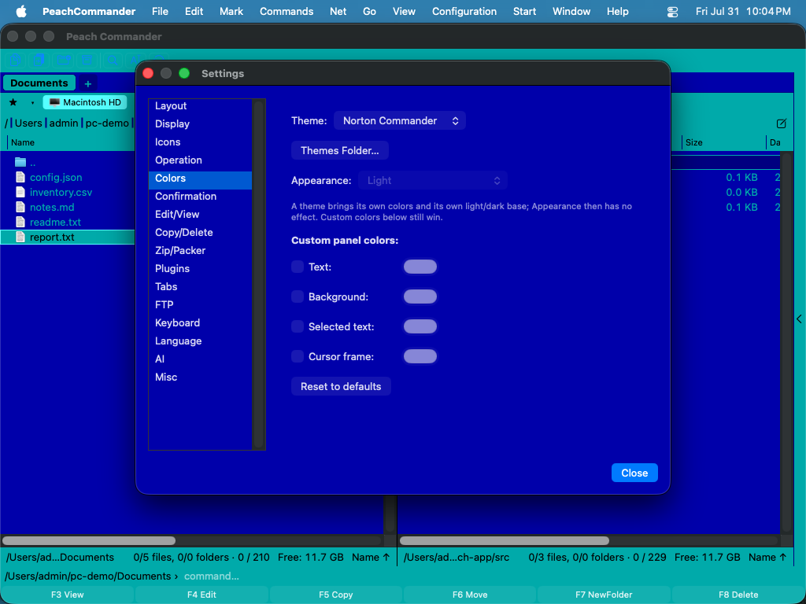

Erscheinungsbild
Peach Commander kann sich dem Aussehen des restlichen Mac anpassen oder einen eigenen Stil annehmen. Sie können der hellen oder dunklen Systemeinstellung folgen (oder eine davon erzwingen), die Datei-Panels umfärben, Dateien nach Typ hervorheben und Schriftgröße der Liste sowie Datumsformat anpassen, sodass die Panels genau so lesbar sind, wie Sie es möchten.
Ein Farbthema wählen
Ein Thema ersetzt die gesamte Panel-Palette in einem Schritt.
- Öffnen Sie die Einstellungen mit Cmd+, (oder Konfiguration > Einstellungen…).
- Wählen Sie die Seite Farben.
- Wählen Sie im Menü Thema: - System (Standard) — kein Thema. Die Panels folgen der Einstellung „Erscheinungsbild" darunter, genau wie bisher. Das ist die Voreinstellung. - Hell / Dunkel — die eingebaute helle oder dunkle Palette festlegen, unabhängig davon, was macOS tut. - Norton Commander — das klassische Blau-Cyan des DOS-Dateimanagers, in den echten CGA-Farben: blaue Panels, cyanfarbene Dateinamen, hellcyane Cursor-Zeile und Gelb für markierte Dateien.
Ein Thema bringt seine eigene Hell/Dunkel-Basis mit, damit Blätter, Rollbalken und Standardsteuerelemente dazu passen — deshalb ist das Menü Erscheinungsbild ausgegraut, solange ein Thema gewählt ist. Die eigenen Panel-Farben weiter unten haben weiterhin Vorrang.
 (Abbildung: Die Norton-Commander-Palette — das originale CGA-Blau, -Cyan und -Gelb.)
(Abbildung: Die Norton-Commander-Palette — das originale CGA-Blau, -Cyan und -Gelb.)
Das Norton-Commander-Thema verwendet die echten CGA-Werte des Originals von 1986: #0000AA Blau, #00AAAA Cyan, #55FFFF für die Cursor-Zeile, #FFFF55 für markierte Dateien. Die Cursor-Zeile invertiert auf dunkle Schrift auf Cyan, so wie das Original sie zeichnete; markierte Dateien behalten ihr Gelb.
 (Abbildung: Die Cursor-Zeile invertiert; markierte Dateien bleiben gelb.)
(Abbildung: Die Cursor-Zeile invertiert; markierte Dateien bleiben gelb.)

(Abbildung: Auch die programmeigenen Dialoge folgen dem Thema.)Themen sind reine Farben. Panel-Aufbau, Rahmen und Schriften bleiben unverändert — Norton Commander bringt keine Doppellinien-Rahmen und keine DOS-Rasterschrift zurück.
Eigene Themen schreiben
Themen sind einfache Textdateien, eine pro Thema, in einem Ordner themes innerhalb Ihres Konfigurationsordners.
- Klicken Sie auf der Seite Farben auf Themen-Ordner…. Der Ordner wird angelegt, falls er fehlt, und beim ersten Mal legt Peach Commander eine kommentierte
example-norton.inihinein, die alle setzbaren Farben auflistet. - Kopieren Sie diese Datei, geben Sie ihr einen neuen Namen und bearbeiten Sie sie. Der Dateiname (ohne
.ini) ist die Kennung des Themas; die ZeileNameerscheint im Menü Thema. - Speichern. Öffnen Sie das Menü Thema erneut — Ihr Thema steht in der Liste. Kein Neustart nötig.
Ein minimales Thema hat drei Zeilen:
[Theme]
Name = Midnight
Base = dark
[Colors]
ListBackground = #101020
ListText = #C0C0D0
 (Abbildung: Ein Thema, geladen aus einer Datei im Themen-Ordner.)
(Abbildung: Ein Thema, geladen aus einer Datei im Themen-Ordner.)
Base wählt die eingebaute Palette (light oder dark), die alle Farben liefert, die Sie nicht aufführen. Farben sind #RRGGBB (oder #RRGGBBAA mit Transparenz). Zeilen, die mit ; oder # beginnen, sind Kommentare.
Ist etwas in der Datei falsch, überspringt Peach Commander diese eine Zeile und behält den Rest Ihres Themas — die Datei wird nicht abgewiesen. Der Grund landet im Systemprotokoll, sichtbar in der Konsole, wenn Sie nach [theme] filtern.
Die Namen light, dark, norton und system gehören den eingebauten Themen; eine Datei mit einem dieser Namen wird übersprungen. Löschen Sie die Datei des gewählten Themas, fällt Peach Commander auf System (Standard) zurück.
Helles, dunkles oder Systemerscheinungsbild einstellen
- Öffnen Sie das Einstellungsfenster über Konfiguration > Optionen… oder drücken Sie Cmd+,.
- Wählen Sie die Seite Farben.
- Wählen Sie im Menü Erscheinungsbild eine der folgenden Optionen: - System (macOS folgen) – passt sich automatisch der aktuellen hellen/dunklen Einstellung Ihres Mac an. - Hell – verwendet immer die helle Palette. - Dunkel – verwendet immer die dunkle Palette.
 (Abbildung: Die Seite „Farben": Wählen Sie ein Erscheinungsbild und überschreiben Sie einzelne Panel-Farben.)
(Abbildung: Die Seite „Farben": Wählen Sie ein Erscheinungsbild und überschreiben Sie einzelne Panel-Farben.)
Panel-Farben anpassen
Auf derselben Seite Farben aktivieren Sie unter Eigene Panel-Farben das Kontrollkästchen neben einem Element und wählen eine Farbe aus dem Farbfeld daneben:
- Text – die Datei- und Ordnernamen.
- Hintergrund – der Panel-Hintergrund.
- Markierter Text – die Farbe für markierte Dateien.
- Cursor-Rahmen – der Umriss um das aktuelle Element.
Lassen Sie ein Kontrollkästchen deaktiviert, um die eingebaute Farbe für dieses Element beizubehalten. Klicken Sie auf Auf Standard zurücksetzen, um alle Überschreibungen auf einmal zu entfernen.
Dateien nach Typ einfärben
- Öffnen Sie Konfiguration > Optionen… und wählen Sie die Seite Anzeige.
- Klicken Sie auf Dateityp-Farben….
- Fügen Sie eine Regel mit einer Namensmaske wie
*.zipoder*.txthinzu und wählen Sie dann eine Farbe für die dazu passenden Dateien. - Verwenden Sie Regel hinzufügen für weitere Masken; klicken Sie auf Fertig zum Speichern oder auf Abbrechen zum Verwerfen.
Passende Dateien erscheinen dann in beiden Panels in der von Ihnen gewählten Farbe.
Schriftgröße und Datumsformat anpassen
Auf der Seite Anzeige können Sie außerdem:
- die Schriftgröße der Panel-Liste in Punkt wählen.
- ein Muster für das Datumsformat eingeben, um zu steuern, wie Änderungsdaten angezeigt werden; lassen Sie es leer, um das regionale Format Ihres Mac zu verwenden. Unter dem Feld erscheint während der Eingabe eine Live-Vorschau.
- den Wechselnden Zeilenhintergrund aktivieren, um mit Zebrastreifen lange Listen leichter überblickbar zu machen.
Tastenkürzel
| Aktion | Tastenkürzel |
|---|---|
| Einstellungen öffnen | Cmd+, |
Hinweise
- Das Menü „Erscheinungsbild" wirkt nur, solange das Thema System (Standard) ist; ein Thema legt seine eigene Basis fest.
- Ein Thema färbt auch die programmeigenen Dialoge. Systemdialoge — Öffnen, Speichern, die Farb- und Schriftauswahl und Warnungen — behalten ihr Standardaussehen, ebenso Fenster, die Plugins selbst öffnen.
- Die Einstellung zum Erscheinungsbild gestaltet die Datei-Panels. Systemdialoge, Warnungen und Standardsteuerelemente folgen stets macOS.
- Der eingebaute Datei-Betrachter verwendet aufeinander abgestimmte helle und dunkle Paletten für die Syntaxhervorhebung, sodass hervorgehobener Code in beiden Erscheinungsbildern lesbar bleibt.
- Eigene Farben und Dateityp-Regeln werden mit Ihren Einstellungen gespeichert und bei jedem Öffnen der App erneut angewendet.